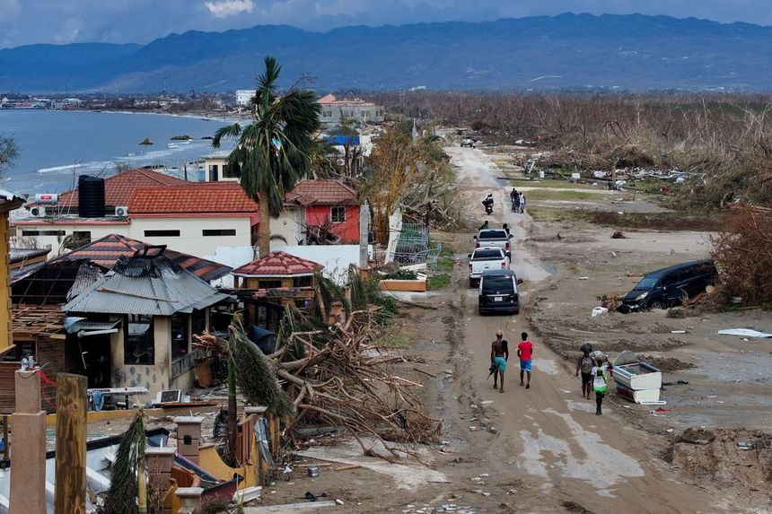

dylan worth
11.28.25 · 
Happy Thanksgiving Everyone. I am most thankful for my family.

A father of four and happily taken to my beautiful wife ❤️
SMB Assessments · Mold Assessor
11.28.25 ·
Happy Thanksgiving Everyone. I am most thankful for my family.
11.26.25 ·
There are no safe jobs, it is about the never ending desire to keep learning skills to keep some type of value in this forever changing world.
11.25.25 ·
I can simply cut off anyone from my life like I did today. Boundaries are an amazing thing to set, but hopefully they are done sooner than later to save more time for peace.
11.24.25 ·
Just know the risk of never starting is scarier than the risk of failure. At least, round 2 could always be an improvement instead of being stuck at the never was.
11.23.25 ·
Been seeing a lot more videos on trafficking. Here are somethings I took away from these videos: • If you get in your car and notice cash in your windshield wipers or your wipers up. Do not touch it. It is to lure you out of your car to go fix them. • Do not remove the cash without gloves or something else because apparently they are lacing cash with chemicals. Sometimes they will put it on your door handle. Do not touch your door handle. Get in your car another way. • A ziptie on your door handle is a way for traffickers to say, "There is someone in this car we can target" Many advice videos will tell you to go home first. Drive to a police station and just let them know you feel unsafe. You dont want to go straight home incase they follow you home. Stay safe ladies.
11.22.25 ·
I think hiring the right person to come out and actually take the time to diagnose what is going on with your home is very important. It is insane how crucial the understanding of building science is to prevent tons of different secondary damages within your home.
11.14.25 ·
Jewish people on my feed arguing God wouldn't do this or God wouldn't do that. The argument is as old as humans on who believes what. I am a christian, so I believe in Jesus Christ, and I believe that he was the ultimate sacrifice. So, this doesnt remove jews from entering heaven but this allows non jews to also enter heaven. ( Galatians 3:29 ) But neither jew or non jew can enter heaven if they deny Jesus. ( John 3:36 ) This is my belief and no one is going to convince me otherwise when I read the bible daily. Jesus teaches to spread the word. Believe whatever you want to believe because at the end of the day we all have free will. This post is being made because they are weaponizing their religious views to try and convince people to support Israel's war crimes in Gaza. I am not going to stand by and watch this as this goes against what Jesus has taught.
11.14.25 ·
"The skin on the lips and the anus shares a similar embryological origin, as both are derived from the same primary germ layer, the endoderm, which forms the lining of the digestive tract." No wonder why I talk so much shit.
11.13.25 ·
Broke, but gonna start trying to start a budget for buying some monero. The digital id era is coming and it is safe to say that cash will become obsolete before a mandated id is required for work. I plan on at least dumping my money into monero – a privacy based open source crypro and buy the open hardware wallet – Trezor safe 5. Hoping this reaches some people for feedback on this idea.
11.09.25 ·
Food for thought. As we allow Blackstone to buy up majority of the housing market and 50 year mortgage being discussed do you not think is a push closer to the rent forever idea?
11.07.25 ·
I do this for my wife and kids. If it was just me I'd be out in the woods or dead. My wife caught me at such an awkward time in my life. I was borderline dead and I know I know I shouldn't live for someone. But it wasn't a matter of living FOR them but the concept they helped me find purpose in moving forward and doing what I need to do. I am a huge advocate for freedom of speech. Unless you are physically harming someone which includes pushing towards one's suicide then feel free to say whatever. Actions speak way louder than words and can be applied in every part of life.
11.06.25 ·
It's why I follow Job 31:1, "I made a covenant with mine eyes; why then should I think upon a maid"
I feel people often forget friendships do not equal lust/adultery unless your heart allows it. We are all humans that have errors but the more we are self-aware with the things around us, the more likely we will stick with our commitments.
11.06.25 ·
I need to step back and just do what I am expected to do. I can clearly see there is no point to do more than what is needed since that hasnt got me anywhere in two years. 🍻 for destroying what was left.
11.04.25 ·
"Jamaica is actively advancing its transformation into a digital society through a comprehensive strategy guided by Vision 2030 and supported by national legislation, infrastructure investments, and international partnerships. The government is focused on creating a technology-enabled society by strengthening institutional frameworks, improving digital infrastructure, and enhancing cybersecurity." I don't even care if you think I am a nutcase — everything, and I mean fucking eveything is pointing towards WEF's 2030 agenda. It is just wild that they announce it after a cat 5 hits and now allows them to rebuild what they need.

11.04.25 ·
Shady practices in business usually translates to having skill issues. 🤔
11.04.25 ·
It is clear to me that many of you don't actually do a second of research in the crap you spout. I could see if you were talking about drop tables to see the rng it takes to get x item on Runescape. But we are talking irl politics where I get lying is common but at least be good at it.
11.02.25 ·
We are in a vital time of history where we need to start growing and preserving our food. I can't stress this enough. Read up on Apeel, or Bill Gate's meat farms. Let me be a little unhinged so you don:t have to. Starting to can, collect food, and grow isn't some tin foil hat stuff. It is a simple way to make sure you and your loved ones are always fed.
11.02.25 ·
I do miss college sometimes. While I'll be taking online courses when I go back, people don't understand how fantastic it is to bounce ideas off curious, like-minded people. In highschool, most people didn't care, and I can accept why. But if you haven't been to college, you may not understand the true value of discussing and learning things with people who actually want to be there. That is my issue at work sometimes: very few share the passion I have for the topic. Very few go beyond what is taught at work to improve their knowledge. Again, like the highschool, I understand. Not everyone views this as a career. I get excited when discussing pathogens, you can ask anyone. I have an obsession with learning different things. The profound experience of college is something I will never get to experience again since it won't be plausible to take the classes in person while running a business.
11.01.25 ·
"They always go quiet when I start quoting the Talmud. It's almost like there is no rebuttal but rather a rejection of engagement so my comment becomes hidden. They understand the book is evil and theyd rather lie to your face and say it's not.
11.01.25 ·
They say true conservatives are pro-Israel. No, we are pro-American. We are against Gov bail outs, monopolies, and lobbying. We are not in a true capitalism otherwise Bezos would be shut down for Monopolizing, Blackrock would get rejected for powergrid purchasing, AIPAC and Qatar would be shut down, and Walmart & others wouldve gone out of business. Putting Israel or Islam first is anti-American. I was against the 40b to Ukraine just like I am against the money sent to Israel.
11.01.25 ·
Ai is one of those things that you know will be the downfall of humanity because of corrupt people but such a blessing when used correctly.
10.29.25 ·
"wHaT dO yOu hAvE tO hIdE" is the comeback I get when I speak about privacy oriented software. It isnt about having something to hide because I literally have nothing to hide. It is about you asking me first, not taking. Simple.
10.28.25 ·
I have made a lot of mistakes in life but you were never one of them. I love you @kimberly_worth
10.24.25 ·
I was always agnostic, never truly atheist. A long time ago, I was abducted with fifteen other kids, and we were tortured.
This took place in Silver Spring, MD. I still have the burn marks and cuts from the trauma.
As I lay there and screamed for God to save me, there was only silence.
I can still hear the dripping of blood from the tables.
I can still hear the screams when I close my eyes at night. I resented God.
About two years ago, I started doing a deep dive through a money trail to truly understand why there seems to be a slavery system
happening today that no one is speaking about. I dug through the families we all know like the Rothschilds and the Rockefellers.
I sifted through sources that were clearly conspiratorial, but I could tell which ones were just words.
Then there were paths that had money trails attached.
It is easy to turn your head away from random words on the internet, but when money is tied to it, numbers hardly lie.
As I dug deeper, I realized this world has gotten darker and darker.
Some of what I found made me think that maybe I needed to look back into the Bible.
I ended up following the teachings from Paul in Acts that spoke about the early Christians called “The Way.”
They practiced no judgment of others, still helped people like Jesus did, and showed love overall.
Who knows the final outcome, but putting faith in Him costs me nothing.
10.21.25 ·
Trump used zero tax dollars to build the ballroom. It was funded privately, not from public money.
Here’s some history showing he isn’t the first to modify the White House:
Theodore Roosevelt (1901–1909) added the West Wing for offices and expanded the family quarters.
Calvin Coolidge (1923–1929) reinforced the upper floors and attic to prevent collapse.
Franklin D. Roosevelt (1933–1945) added the East Wing and installed an indoor pool.
Harry S. Truman (1945–1953) had the interior gutted and rebuilt.
Dwight D. Eisenhower (1953–1961) installed a bowling alley.
Richard Nixon (1969–1974) converted FDR’s pool into the press room.
Gerald Ford (1974–1977) built an outdoor pool on the South Lawn.
Ronald Reagan (1981–1989) restored the State Dining Room.
Bill Clinton (1993–2001) upgraded wiring and security.
Find real issues to criticize, not a ballroom addition funded privately.
10.22.25 ·
Just letting you guys know that I am not suicidal.
10.22.25 ·
There is a real evil in this world explained by a giant money trail. I am at this point where I just want to homestead and get away from this corrupt world.
10.22.25 ·
I guess we won't visit Europe 🍻
"The European Union is implementing a new Entry/Exit System (EES) that requires biometric data, including fingerprints and facial images,
from travelers from countries outside the Schengen Area, including the United States, starting October 12, 2025.
Travelers who refuse to provide their biometric data will be denied entry."
CBS News
Planet Today
CNN
10.23.25 ·
People are really out here complaining about a higher sales tax on non essential items to replace the money lost from if we remove property tax. You cant make this shit up 😂 Imagine staying with never truly owning your property because you want to avoid clothes now costing more. I mean Desantis hasnt discussed grocery tax or child item tax in replacement. It would more than likely mean non essential items have a higher tax on them.
10.23.25 ·
I promise you I can argue any time a day. Morning, afternoon, evening, night, when I first wake up, or right before bed. It doesn't matter the debate. I am going to give you a run for your money because I am autistic af and I just can't accept being wrong unless you 100% can prove I am. 99.9%? Nah you slippin with that .1%.
10.24.25 ·
“A wise person should have money in their head, but not in their heart.” – Jonathan Swift